Tree Health & Site Assessment
Arborist & Landscaper
405-953-1285
www.AbundantLife.Land
1. Purpose of Assessment
This assessment was performed to document the present condition of a mature red maple, evaluate recent canopy discoloration and associated landscape stress, identify likely contributing factors, and develop a practical preservation and landscape rehabilitation plan.
This report is intended primarily as a tree-care and land-management assessment. It is not presented as a forensic determination of liability or as a definitive diagnosis of a single causal agent.
2. Tree Description
The subject tree is a mature red maple (Acer rubrum) estimated at approximately 24 inches diameter at breast height (DBH), approximately 55 feet in height, and approximately 40 feet in crown spread. The tree is estimated to be approximately 50–60 years old and has codominant stem architecture.
The root flare is visible and planting depth appears appropriate. No significant stem-girdling roots were observed during the current visual assessment. No notable mower or string-trimmer injury was observed at the base, and no obvious evidence of active borer infestation was identified. Minor trunk cavitation and some evidence consistent with sunscald were observed.
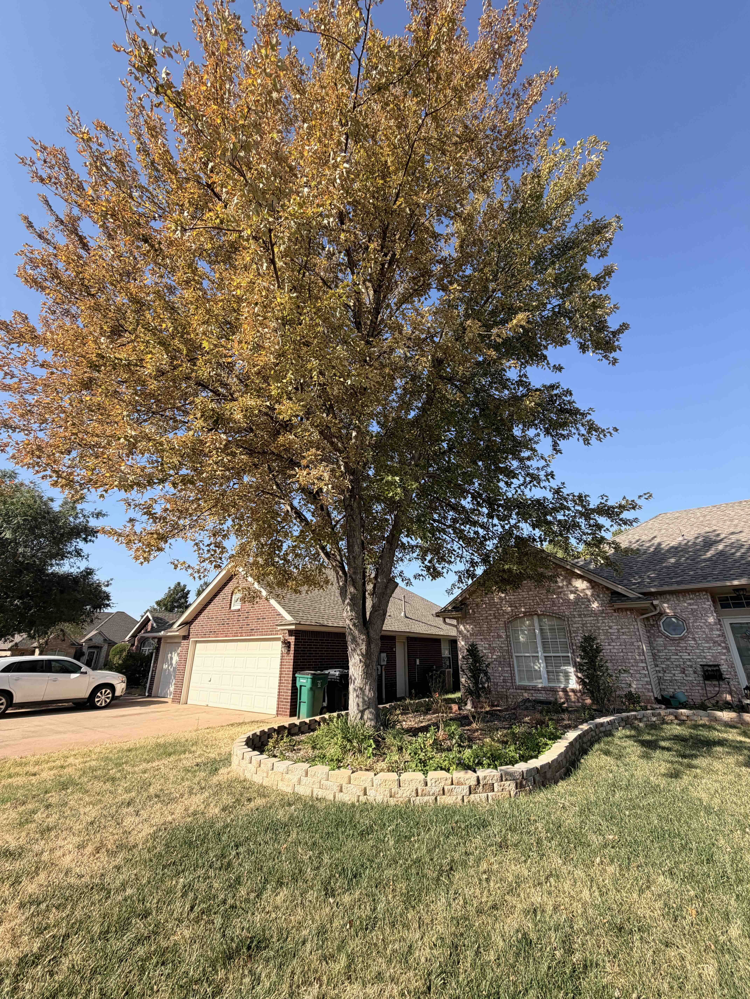
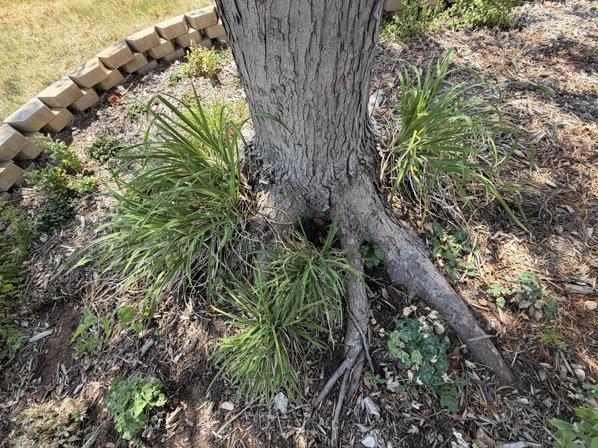
3. Documented Site History
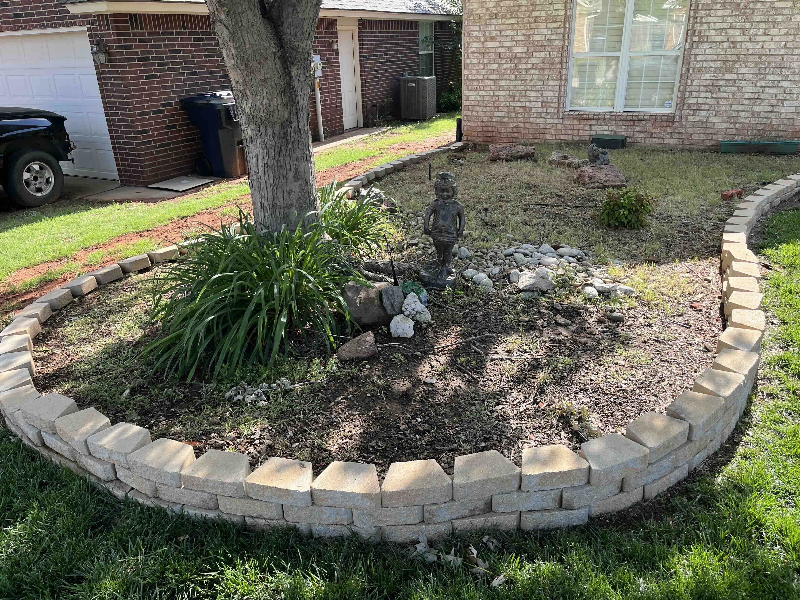
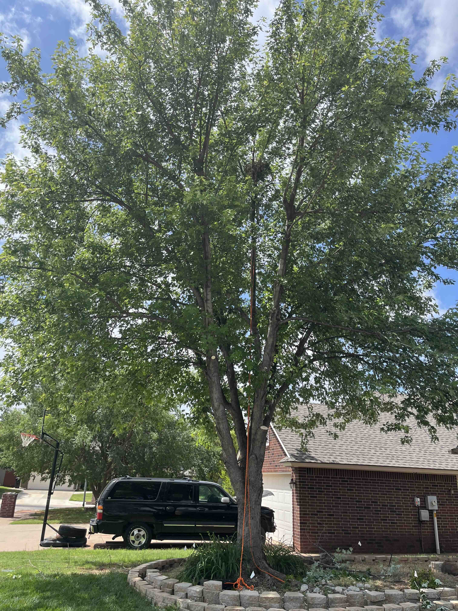
4. Previous Utility Excavation Within Root Zone
Historical photographs document substantial soil disturbance within the established root zone by May 2025. The disturbed corridor ran generally east to west along the south side of the subject tree. Based on available photographs, the trench appears to have been approximately 18 inches wide and approximately 6 feet from the trunk. Exact trench depth and utility type are presently unknown.
Root severance was not directly observed or documented at the time of excavation. However, given the maturity and size of the tree and the location of the excavation within the established root system, disturbance and/or severance of existing roots is considered highly probable.
The photographic record does not demonstrate an immediate canopy response to the disturbance. The maple retained a dense, green crown afterward and remained visually vigorous through the 2025 growing season. This does not exclude belowground injury. Root loss, altered soil structure, and compaction can reduce physiological reserve or functional rooting capacity without producing immediate visible crown decline.
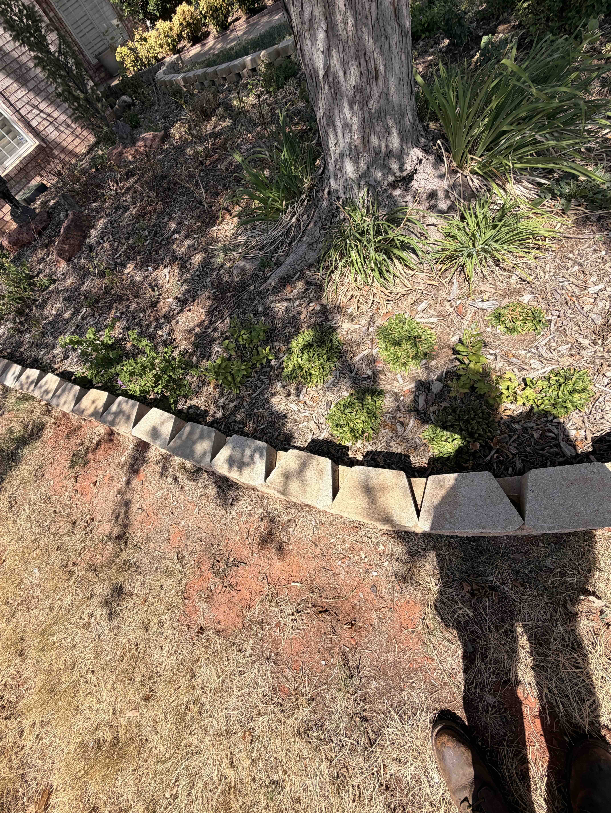
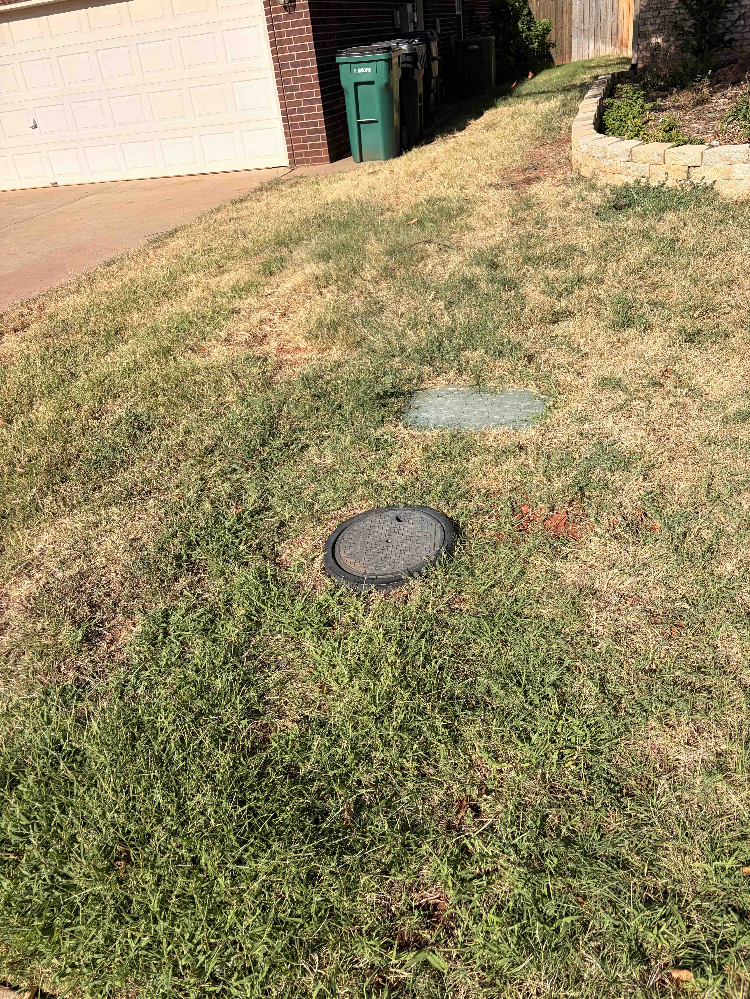
5. Present Crown Condition
The tree presently exhibits extensive premature browning and retained foliage throughout a substantial portion of the canopy. Symptoms are most pronounced on the south to south-eastern side of the crown. The north-to-northwestern portion remains comparatively greener and visually more vigorous.
This asymmetric distribution remains relevant because the area of greatest crown stress generally corresponds with the side of the root zone subjected to previous utility-related disturbance. However, current local observations also indicate substantial stress among other maples that did not share this tree's site-specific disturbance history.
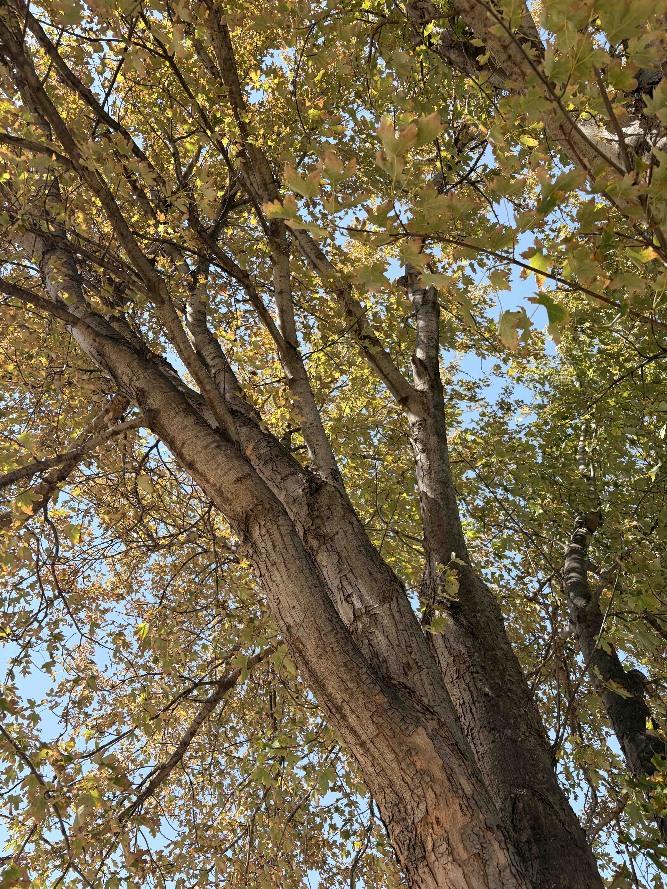
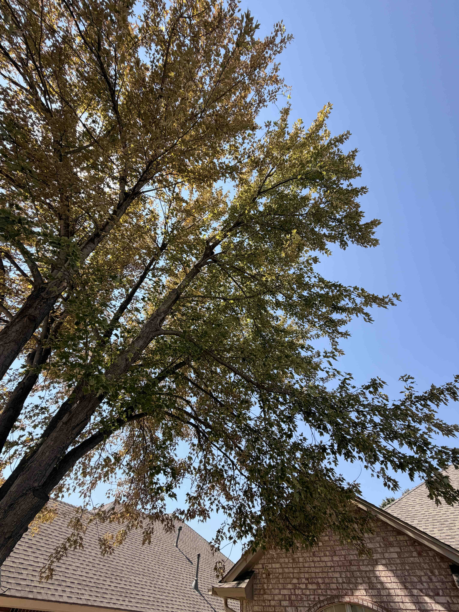
6. Soil and Root-Zone Observations
Surface soil within the planting bed is dark, contains visible organic matter, exhibits aggregation, and supports fine roots. Beneath this organically enriched surface material, the underlying native soil is predominantly red clay.
Soil within the previously excavated lawn area remains noticeably hard and compacted despite successful re-establishment of turf. Surface vegetation recovery should not be interpreted as evidence that deeper soil structure or mature tree-root function has fully recovered from the disturbance.
The visible root flare and apparently appropriate planting depth reduce concern for deep planting as the primary explanation for the present decline. No significant stem-girdling roots were observed during the visual inspection.
Because the tree has experienced previous root-zone disturbance, future management should emphasize physical protection of the remaining root system. Further tillage, cultivation, excavation, unnecessary aeration, grade alteration, or other mechanical soil disturbance should be avoided wherever practical. Organic matter should instead be introduced gradually through surface application and natural biological incorporation.
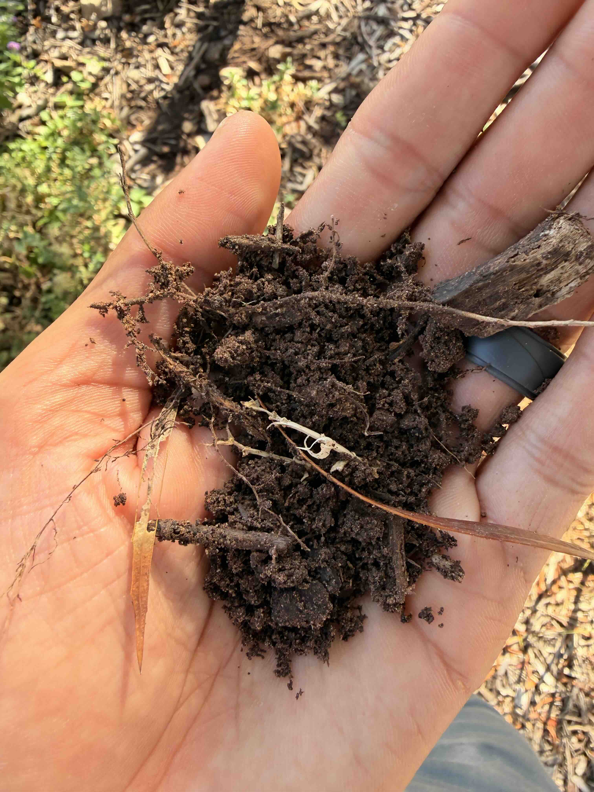
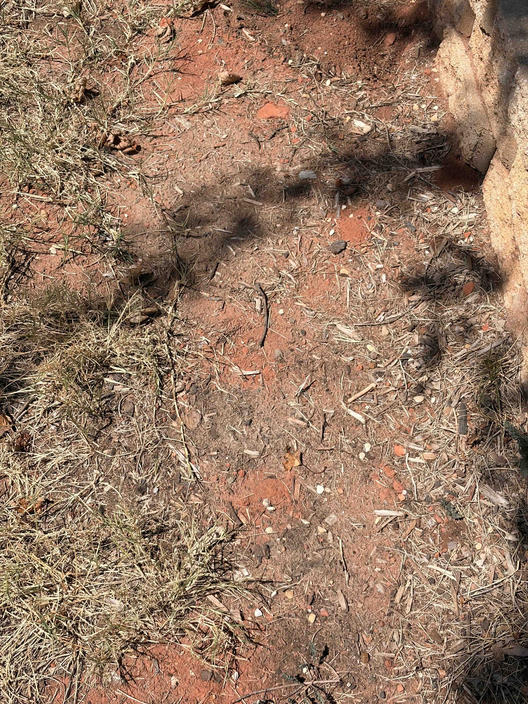
7. Irrigation and Moisture Stress
The landscape irrigation system is currently scheduled to operate three times per week for approximately seven minutes per cycle. Irrigation extends beyond the raised planting bed and into the surrounding lawn.
Controller run time alone does not establish the actual amount or uniformity of water delivered to the root zone. Soil moisture availability, sprinkler precipitation rate, distribution uniformity, infiltration into clay soil, and seasonal evaporative demand should therefore be evaluated before substantially increasing or modifying irrigation.
Several shallow-rooted ornamental plants also show stress despite occupying areas that were not directly affected by the prior utility excavation. This indicates that broader moisture limitation or environmental stress may be contributing independently of the site-specific disturbance.
8. Surrounding Landscape & Environmental Context
Stress symptoms are not confined to the subject tree. Several shallow-rooted ornamental plants within the property exhibit browning, decline, or reduced vigor despite occupying areas that were not directly affected by the prior utility excavation. More drought-tolerant vegetation remains comparatively functional.
During the September 2026 assessment, multiple maples visible within the immediate surrounding area were also observed exhibiting substantial premature foliar discoloration, crown thinning, browning, and/or apparent dieback. These neighboring trees were not individually assessed, and their conditions should not be interpreted as diagnostic evidence of a common causal agent. Their appearance does, however, establish that the subject tree's symptoms are occurring within a broader local pattern of maple stress.
This environmental context increases the importance of seasonal heat, moisture availability, evaporative demand, soil conditions, and other environmental stressors when interpreting the condition of the subject tree. Site-specific root disturbance should therefore be considered as one potentially important component of a larger physiological stress environment rather than assumed to be the sole cause of crown discoloration.
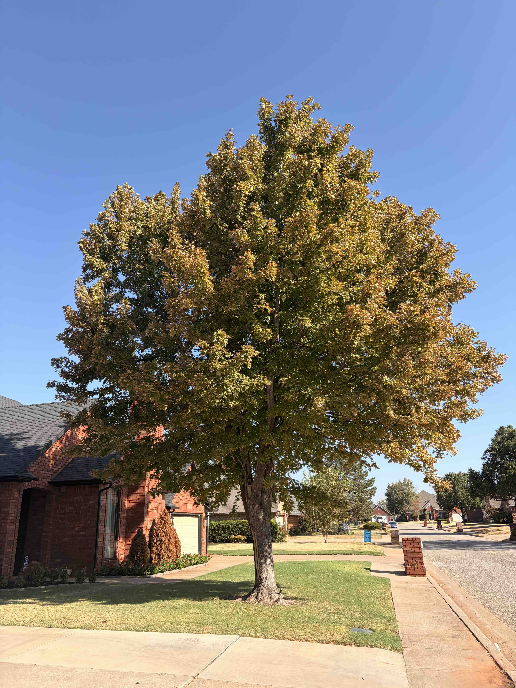
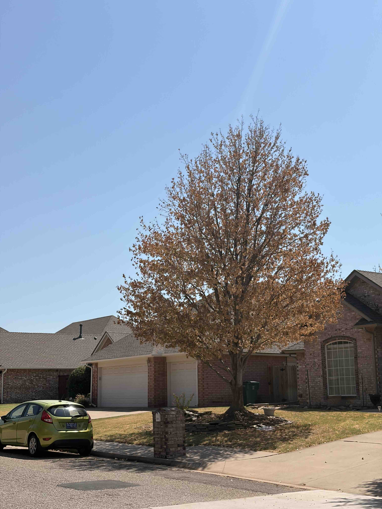
9. Assessment
The subject red maple was documented to be vigorous during the 2025 growing season, with dense green foliage and no comparable premature discoloration, thinning, or canopy decline.
Significant utility-related soil disturbance occurred within the established root zone by May 2025. Photographs taken approximately one month later show the tree retaining a dense and broadly green crown, and no major aboveground decline was documented through the remainder of the 2025 growing season.
The tree subsequently leafed out normally in spring 2026. Premature discoloration was first observed in late July 2026 and progressed through late summer.
Current observations support a multiple-stressor interpretation rather than identification of a single definitive cause. Significant stress is visible among other landscape plants on the property, and multiple nearby maples are exhibiting substantial late-season discoloration, thinning, browning, and/or apparent dieback. These observations indicate that broader environmental conditions are likely contributing materially to the stress expressed by the subject tree.
The subject maple also carries an important site-specific history not necessarily shared by surrounding comparison trees: substantial excavation occurred within its established root zone. Soil within the disturbed area remains noticeably compacted. Root severance was not directly observed; however, disturbance and/or severance of established roots is considered probable given the location and nature of the excavation.
The lack of immediate canopy decline following excavation is important and argues against treating the utility disturbance as a demonstrated sole cause. However, delayed effects remain biologically plausible. Root loss, residual compaction, altered soil structure, or reduced root-zone volume may lower physiological reserve and increase susceptibility to later heat and moisture stress.
The present condition is therefore considered most consistent with substantial physiological stress arising from interacting environmental and site-specific factors. Seasonal environmental stress appears to be affecting maples broadly within the immediate area, while previous root-zone disturbance, persistent soil compaction, effective irrigation, and competition for available soil moisture may be increasing the severity of the subject tree's response.
Available evidence does not presently establish irreversible mortality of the browned crown. Continued preservation is considered reasonable, with spring 2027 leaf-out expected to provide substantially more information about branch vitality and the tree's capacity for recovery.
10. Differential Considerations
| Potential Factor | Current Relevance | Basis |
|---|---|---|
| Seasonal environmental stress | High | Multiple nearby maples are exhibiting substantial premature discoloration, crown thinning, browning, and/or apparent dieback during the same period. Additional vegetation within the subject landscape is also showing stress. |
| Root disturbance associated with previous utility excavation | High – Site Specific | Documented excavation occurred within the established root zone. The most pronounced crown symptoms occur generally on the corresponding southwest side. Root severance was not directly documented, and the canopy remained vigorous afterward, so the disturbance should be considered a potentially important predisposing factor rather than a demonstrated sole cause. |
| Residual soil compaction within previously excavated root zone | Moderate to High | Soil over the former trench remains noticeably hard and compacted despite successful turf re-establishment, potentially limiting infiltration, aeration, and root recolonization. |
| Summer moisture limitation / irrigation performance | Moderate to High | Symptoms developed during peak summer demand. Irrigation currently operates three times weekly for approximately seven minutes, but actual precipitation rate, distribution uniformity, infiltration, and root-zone moisture availability have not yet been quantified. |
| Competition from turf and shallow-rooted vegetation | Moderate | The mature maple shares portions of its effective root zone with lawn and ornamental vegetation, several of which are themselves exhibiting moisture stress. |
| Improper planting depth / girdling roots | Currently Low | Root flare is visible, planting depth appears appropriate, and no significant stem-girdling roots were observed. |
| Mechanical trunk injury / borer activity | Currently Low | No significant mower or string-trimmer injury and no obvious evidence of active borer infestation were observed. |
| Vascular disease or other internal disorder | Unresolved | Cannot be excluded by visual inspection alone. Additional diagnostic investigation may be warranted if decline progresses despite correction of identifiable site stresses. |
11. Recommendations
Root-Zone Protection
- Preserve the existing root system by avoiding additional excavation, trenching, tillage, cultivation, grade change, unnecessary mechanical aeration, or other soil disturbance within the root zone.
- Minimize equipment traffic and other sources of compaction beneath the canopy and within the broader functional root zone.
- Do not mechanically incorporate compost, mulch, or other amendments into the soil. Allow organic materials to enter the soil gradually through decomposition and biological activity.
Mulch & Soil Rehabilitation
- Maintain approximately 2–4 inches of coarse organic mulch over appropriate portions of the planting bed and, where practical, expand the mulched area to reduce evaporation, moderate soil temperature, and reduce competition from turf and shallow-rooted vegetation.
- Keep mulch separated from direct contact with the trunk and preserve visibility of the root flare.
- Gradually rehabilitate the compacted soil over and around the former utility trench through conservative surface applications of mature, finished compost.
- Apply compost as a light topdressing, generally approximately 1/4 to 1/2 inch per application, rather than attempting to substantially alter soil organic matter in a single treatment.
- Allow compost to incorporate naturally through rainfall, irrigation, turf-root activity, soil organisms, and normal wet-dry cycling. Do not till or mechanically mix the amendment into the root zone.
- Where practical, extend topdressing somewhat beyond the visible boundaries of the former trench to encourage a gradual transition between disturbed and undisturbed soil rather than creating a sharply amended strip.
- Monitor soil penetrability, infiltration, vegetation performance, and moisture behavior over subsequent growing seasons. Soil rehabilitation should be regarded as a gradual, multi-season process.
Water Management
- Perform an irrigation audit to determine actual precipitation rate and distribution around the maple rather than relying solely on controller run time.
- Compare soil moisture on the southwest and east-to-northeast portions of the root zone at multiple distances from the trunk.
- If supplemental irrigation is indicated, apply water slowly across a broad portion of the functional root zone rather than concentrating water immediately around the trunk.
- Irrigate sufficiently to replenish root-zone moisture while avoiding prolonged saturation of the native clay soil.
Canopy Management
- Avoid substantial live-canopy reduction while the tree is physiologically stressed. Remaining functional foliage provides carbohydrates required for root maintenance and recovery.
- Remove only branches that are confirmed dead, broken, hazardous, or otherwise require intervention.
- Do not assume that branches carrying brown retained foliage are dead without confirming branch and bud viability.
- Avoid unnecessary fertilization intended to stimulate rapid shoot growth while root function and water availability remain uncertain.
Surrounding Landscape
- Remove nonviable ornamental vegetation and selectively prune confirmed dead material while retaining viable plants.
- Reduce unnecessary plant competition within important portions of the maple root zone where compatible with the landscape design.
- Maintain turf at an appropriate summer mowing height and avoid close mowing during periods of heat and moisture stress.
- Select future replacement plantings according to the site's heat exposure, native clay soil, available light, mature-tree root competition, and irrigation conditions.
Monitoring
- Preserve September 2026 photographs as the baseline for subsequent comparison.
- Reassess twig, bud, and branch vitality following leaf drop and during dormancy.
- Reinspect the tree during spring 2027 leaf-out.
- Document whether the presently browned crown sectors leaf out normally, weakly, partially, or fail to leaf out.
- If substantial decline continues despite improved soil-moisture conditions and root-zone protection, consider additional diagnostic investigation for vascular disease or other internal causes.
12. Prognosis
Preservation remains reasonable at this stage. Although the extent of premature foliar browning is substantial, no major portion of the crown has yet been confirmed dead, and the tree retains a significant area of green foliage.
The observation of substantial stress among other maples in the immediate area provides important context and cautions against interpreting current foliar appearance alone as evidence of irreversible crown loss. At the same time, the subject tree's history of root-zone excavation and residual soil compaction may reduce its physiological resilience relative to an undisturbed tree.
Prognosis should therefore remain guarded but preservation-oriented until spring 2027 leaf-out can be evaluated. Recovery will depend upon the amount of functional root system remaining, the tree's ability to regenerate absorbing roots, future environmental conditions, effective soil-moisture availability, and protection from additional root-zone disturbance.
13. Limitations
This assessment is based on visual inspection, available site history, photographs, client-reported information, and current field observations. No laboratory testing, root excavation, aerial inspection, resistance drilling, tomography, or subsurface root mapping was performed unless otherwise noted.
The exact depth of the prior utility trench, the utility involved, and the number, diameter, or condition of roots affected by the excavation are presently unknown. Root severance is therefore inferred from the location and nature of the disturbance rather than directly documented.
Nearby maples referenced in this report were observed only for local environmental context and were not individually inspected or diagnosed. Their appearance should not be interpreted as proof of a common causal agent.
Tree condition can change over time, particularly following root injury, drought, storms, disease, or other environmental stress. Continued monitoring is recommended.
Prepared by:
Abundant Life Land & Tree LLC
This report is intended to support preservation-oriented tree care, landscape rehabilitation, and ongoing site management.